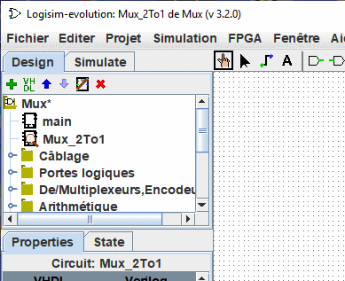
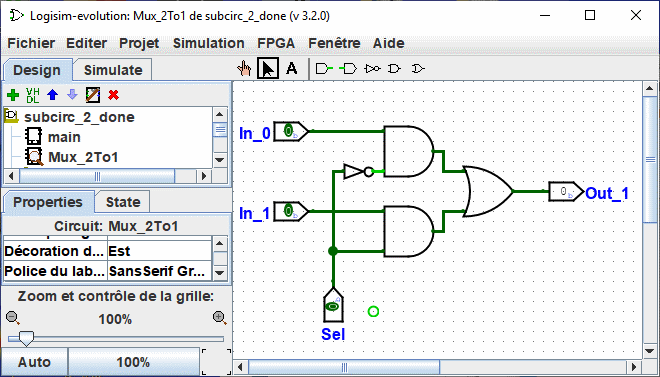

Créer des circuits
Chaque projet de Logisim est en réalité une bibliothèque de circuits. Dans sa forme la plus simple, chaque projet possède seulement un circuit (nommé main par défaut), mais il est facile d'en ajouter d'autres, pour cela vous pouvez soit cliquer sur le  de la petite barre de menu au-dessus du panneau de navigation ou clic droit sur la racine de l'arborescence dans le panneau de navigation ou encore sélectionnez | Projet |→| Ajouter Circuit... | et ensuite, saisissez le nom désiré pour le nouveau circuit que vous voulez créer.
de la petite barre de menu au-dessus du panneau de navigation ou clic droit sur la racine de l'arborescence dans le panneau de navigation ou encore sélectionnez | Projet |→| Ajouter Circuit... | et ensuite, saisissez le nom désiré pour le nouveau circuit que vous voulez créer.
Note: Le nom des circuits doit commencer par une lettre (A..Z,a..z) il peut contenir les signes (.,_) et des chiffres.
Supposez que nous voulons construire un multiplexeur 2-to-1 nommé Mux_2to1. Après la création du circuit, Logisim ressemblera à ceci.

Dans la liste de l'explorateur, vous pouvez maintenant voir que le projet contient deux circuits, main et Mux_2to1 Logisim dessine une loupe sur l'icône du circuit actuellement éditable. Le nom de circuit actuel apparait aussi dans la barre de titre de la fenêtre.
Après avoir édité le schéma du circuit Mux_2to1, nous pourrions présenter le circuit suivant.

Suite: Utiliser des sous-circuits.